Valle de Yunguilla · Cuenca, Ecuador
Vive la naturaleza
79 lotes en una zona privilegiada del valle, donde podrás convivir con la naturaleza en un entorno pacífico, con vistas espectaculares y un clima perfecto.
Un proyecto pensado para quienes buscan seguridad, exclusividad y conexión real con la naturaleza — en el corazón del Valle de Yunguilla.Fideicomiso administrado por ENLACE Negocios Fiduciarios
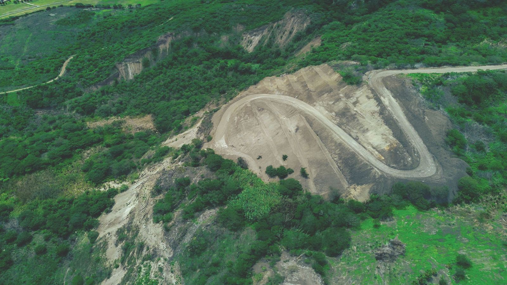
Sobre Portón del Valle
Portón del Valle es un proyecto de 79 lotes ubicado en una zona privilegiada del Valle de Yunguilla, en donde podrás convivir con la naturaleza en un entorno pacífico, con vistas espectaculares, disfrutando de un clima perfecto.
Constituye la opción ideal para invertir, gracias a su proyección de crecimiento en plusvalía, respaldada por su ubicación estratégica, exclusividad y el desarrollo sostenible de la zona.
Cuenta con un estudio hidrológico–hidráulico que define la canalización óptima del agua: cunetas, canales, cruces de vía con tubería, subdrenes, atarjeas, encauzamiento de quebradas e impermeabilización de reservorios.
Beneficios
Infraestructura completa y espacios exclusivos pensados para conectar con la naturaleza.
Con planta propia de tratamiento para el proyecto.
Red eléctrica disponible en todos los lotes.
Con 8 metros de ancho para un acceso cómodo y seguro.
Iluminación en las vías internas del proyecto.
La seguridad es nuestra prioridad: acceso a través de un elegante portón.
Paisajes espectaculares del Valle de Yunguilla desde cada lote.
Laguna y mirador que te conectan con la naturaleza.
Extensos caminos para recorrer, hacer ejercicio y disfrutar del entorno.
Zonas exclusivas
Cada rincón del proyecto fue pensado para ofrecerte tranquilidad, seguridad y paisajes inigualables.
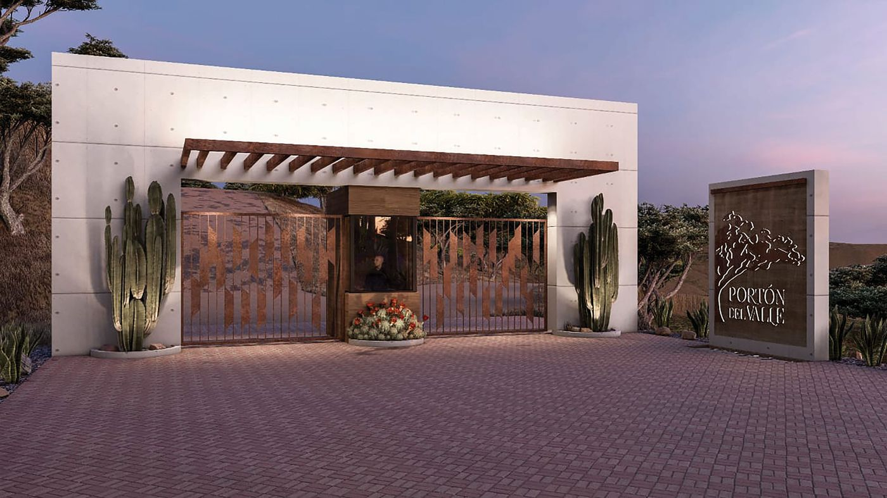
Accede a tu hogar a través de un elegante portón de ingreso, diseñado para brindarte control y tranquilidad desde el primer momento.
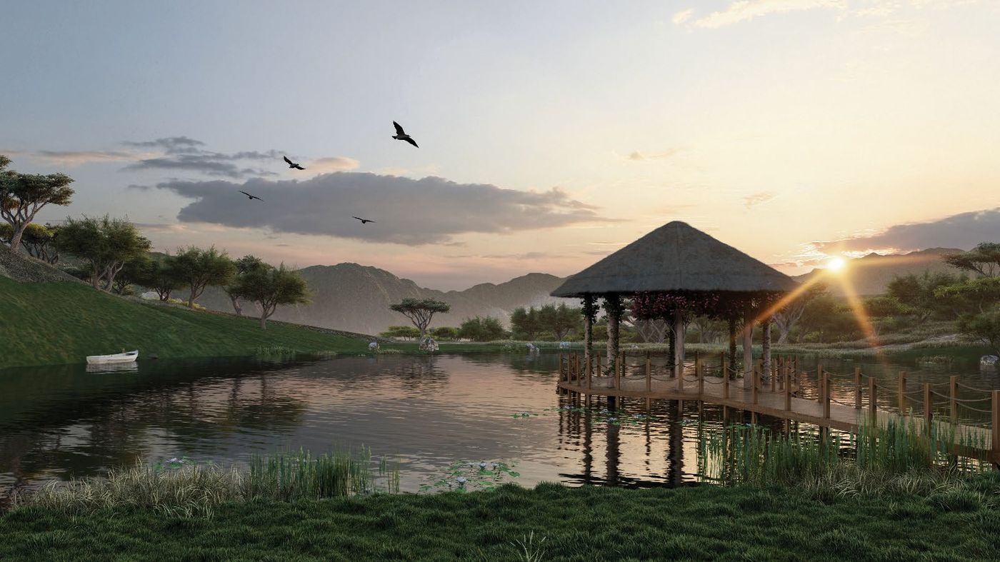
Vive rodeado de espacios exclusivos que te conectan con la naturaleza. La laguna brinda un entorno sereno para desconectar.
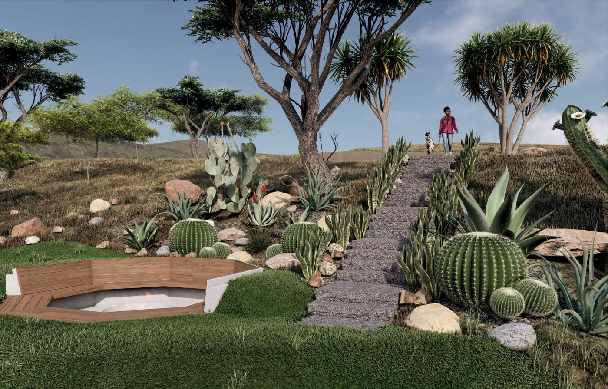
El mirador ofrece panorámicas espectaculares de los paisajes circundantes — un lugar para contemplar el Valle de Yunguilla.
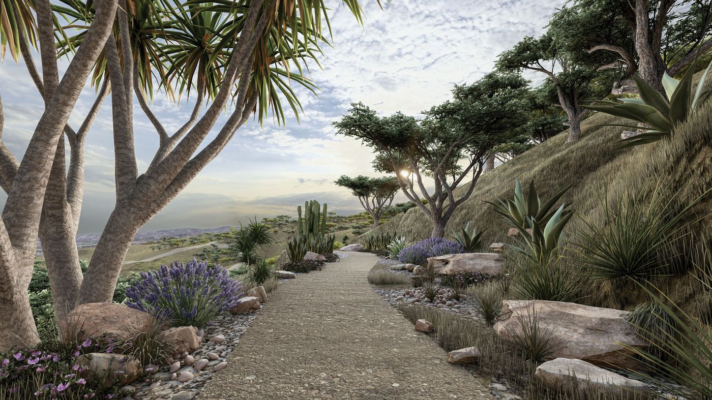
Rodeados de un entorno natural único, estos caminos invitan a la relajación, el ejercicio y la conexión con la naturaleza.
Ubicación privilegiada
A 800 metros del parque extremo, con vía principal de acceso y un elegante portón de ingreso al proyecto.
Mapa interactivo
Pasa el mouse sobre el mapa para ver el estado, área y precio de cada lote. Los disponibles muestran su información completa; los que ya no están disponibles se marcan en rojo.
Mapa construido a partir del plano oficial del proyecto — pasa el cursor sobre cualquier lote.
Lotes disponibles
Lotes desde 2.500 m². 70% con entrega de escrituras al finalizar la ejecución de trabajos, opción a financiamiento con varias instituciones crediticias y descuento especial por pago en efectivo.
Cargando disponibilidad… Precios referenciales, sujetos a actualización.
| Lote | Área m² | Estado | Valor |
|---|
Áreas y valores referenciales del brochure oficial. Escríbenos por WhatsApp para conocer disponibilidad actualizada y forma de pago.
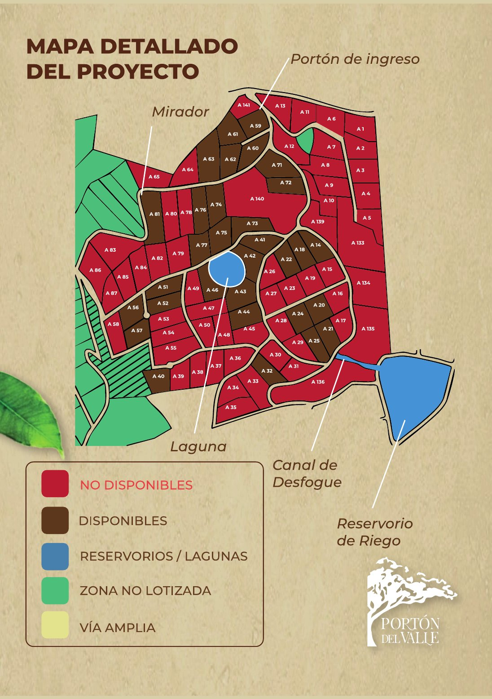
Descarga la versión completa del plano con la laguna, el mirador y el portón de ingreso.
Galería
Renders y fotografías del proyecto: portón de ingreso, laguna, mirador y senderos.
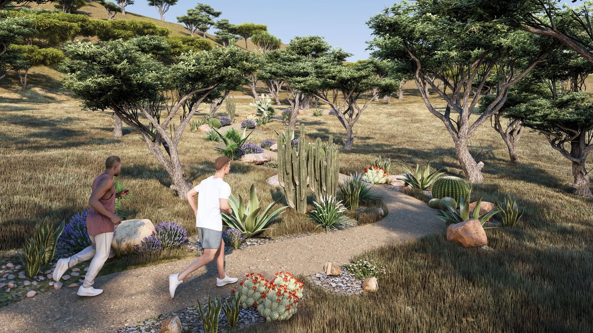
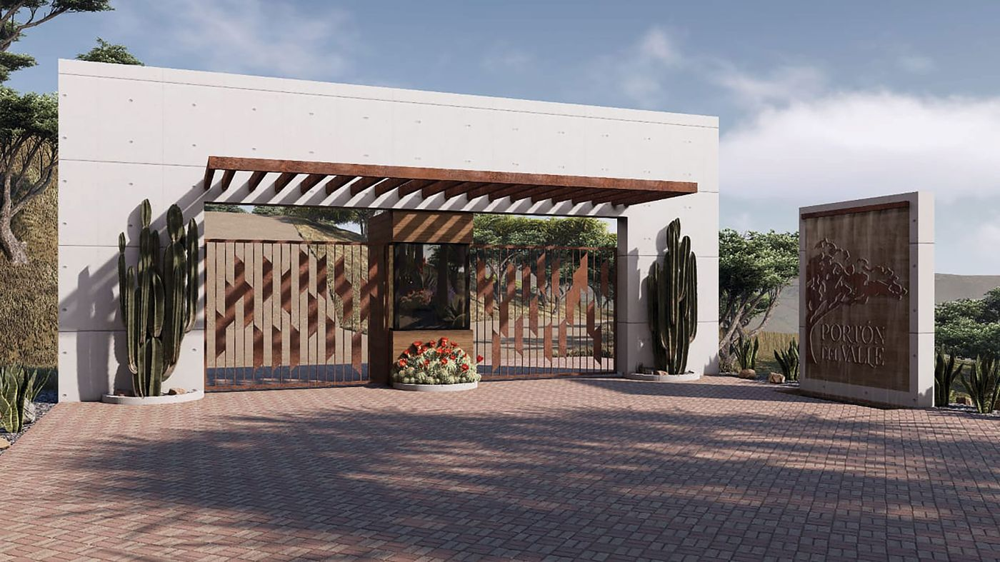
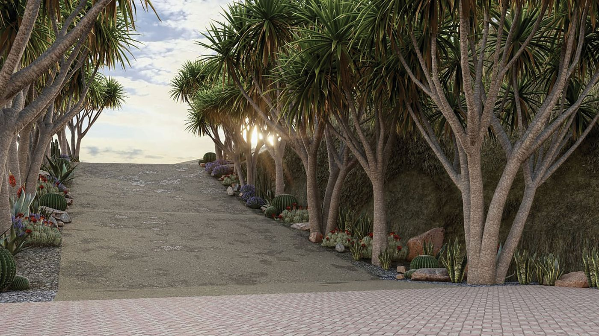
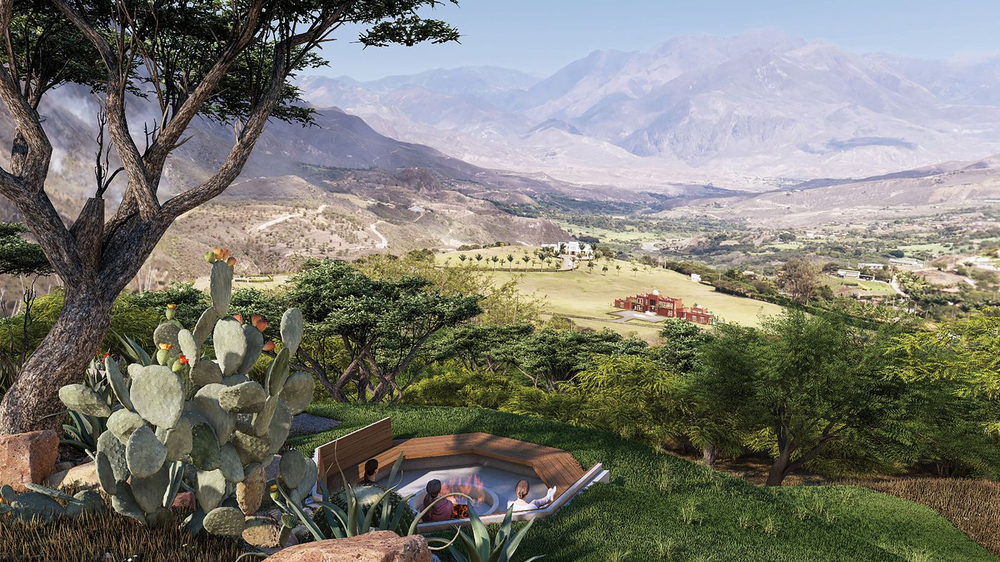
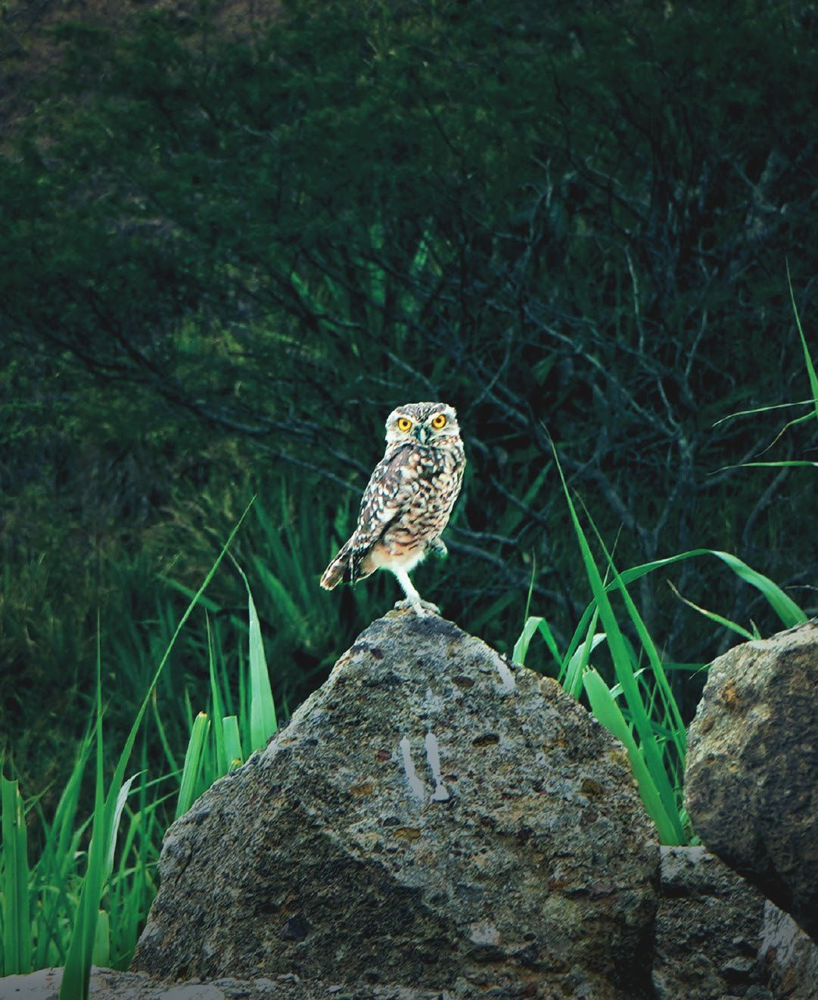
Contacto
Cuéntanos qué lote te interesa y te contactamos con toda la información: disponibilidad, mapa del proyecto y formas de pago.